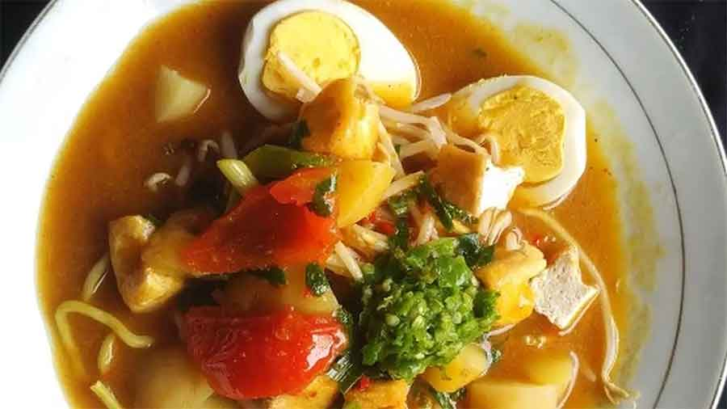

Mie Rebus Medan

Descriptions
Mie rebus Medan is a popular Indonesian noodle dish that originates from Medan, a city in North Sumatra, Indonesia. It consists of yellow noodles (mie) served in a flavorful, spicy, and sweet broth, typically made with a blend of spices, shrimp paste, garlic, shallots, and palm sugar. The broth is usually thickened with potato or sweet potato, giving it a creamy texture.
The dish is commonly garnished with lime wedges and sambal (chili paste) to add extra flavor and spice according to individual preference. Mie rebus Medan is known for its rich and complex flavors, making it a popular choice among noodle lovers in Indonesia.
Ingredients
- 250 grams yellow noodles (mie kuning)
- 100 grams bean sprouts
- 2 boiled eggs, halved
- 2 pieces fried tofu, sliced
- Fried shallots, for garnish
The Broth Ingredients
- 500 ml water
- 2 cloves garlic, minced
- 2 shallots, minced
- 1 cm piece of galangal, sliced thinly
- 1 cm piece of ginger, sliced thinly
- 1 stalk lemongrass, bruised
- 2 kaffir lime leaves
- 2 tablespoons sweet soy sauce (kecap manis)
- 1 tablespoon tamarind paste, dissolved in 2 tablespoons of water
- 1 teaspoon shrimp paste (terasi), toasted
- Salt and sugar to taste
- Cooking oil
Steps
Prepare the broth
- Heat a bit of cooking oil in a pot over medium heat. Sauté the minced garlic and shallots until fragrant.
- Add galangal, ginger, lemongrass, and kaffir lime leaves. Sauté for another minute.
- Pour in water, sweet soy sauce (kecap manis), and the dissolved tamarind paste. Bring to a boil.
Cook noodles and topings
- While the broth is simmering, prepare the noodles according to package instructions. Usually, they need to be blanched in boiling water for a few minutes until tender. Drain and set aside.
Blend the broth
- Once the broth has boiled and the flavors have melded together (about 10-15 minutes), remove the lemongrass and kaffir lime leaves. Transfer the broth to a blender and add toasted shrimp paste. Blend until smooth. If you prefer a chunkier broth, you can skip blending.
Assemble the dish
- Place a portion of cooked noodles in a serving bowl. Arrange bean sprouts, sliced tofu, and half a boiled egg on top.
- Ladle the hot blended broth over the noodles and toppings.
Garnish and serve
- Garnish with fried shallots and serve immediately.
Notes
- Mie Rebus Medan is typically served hot and can be adjusted to your preferred spiciness and sweetness by varying the amount of kecap manis, tamarind paste, salt, and sugar.
- Some variations of Mie Rebus Medan include additional toppings like boiled potatoes or prawn crackers (kerupuk).
Enjoy your Mie Rebus Medan! It's a flavorful and satisfying Indonesian noodle dish that's perfect for any meal.